Coursework and thesis work from five years at the University of Aveiro, spanning structural analysis, thermal systems, product design, automation, transmissions, sustainable energy, eco-design, fracture mechanics and ocean engineering.
My master's thesis, "Numerical and experimental analysis of the mechanical behavior of Graded Lattice Structures for automotive applications," addresses the automotive industry's need for lightweight impact absorbers. Uniform lattice structures are already vastly used for crashworthiness application but they frequently fail through catastrophic diagonal shear bands, for that reason I designed and evaluated continuous thickness-graded octahedron lattice structures. The research methodology combined explicit non-linear dynamic finite element simulations in LS-DYNA with a hybrid manufacturing route, additive manufacturing-assisted investment casting, using an aluminum alloy—to physically validate the numerical models.
The experimental and numerical results demonstrated that introducing a continuous functional thickness gradient successfully forces the structure into a stable, progressive layer-by-layer collapse. This structural optimization reduced the initial peak stress by 34%, minimizing the shock force transmitted during an impact, while simultaneously increasing the specific energy absorption by 19.5%. Furthermore, the finite element framework I developed proved highly reliable as a virtual testing tool, predicting the yield stress and specific energy absorption of the graded structures with deviations of less than 3% from the physical experimental data.
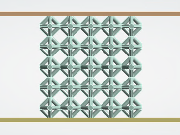
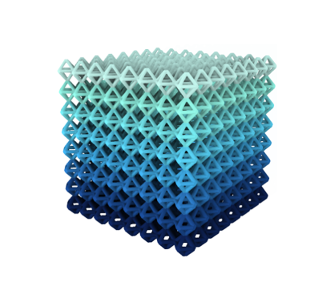
Reverse-engineered a combustion-engine RC car and rebuilt it as a fully electric platform with a custom long-range remote.
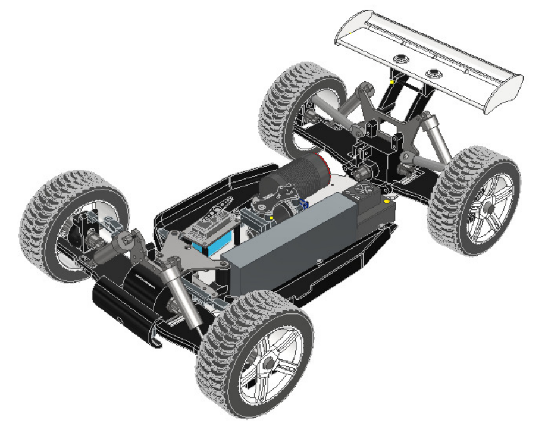
Electric RC Car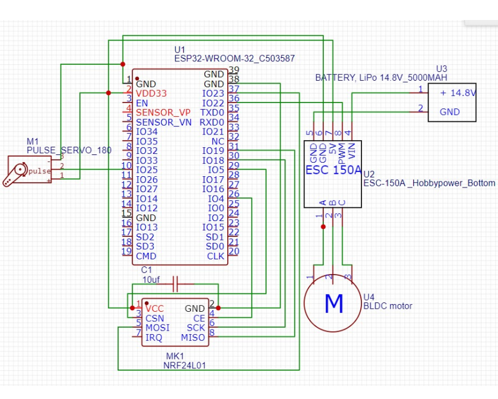
Electric SchematicReverse-engineered a combustion-engine RC car and rebuilt it around a BLDC motor, ESC and 4S LiPo pack, targeting 70 km/h top speed and 1-hour range with even mass distribution across all wheels. Also designed a custom long-range remote: benchmarked Bluetooth, WiFi and LoRa latency and stability, then built the final ESP32 + NRF24L01 control link on LoRa after measuring under 15 ms of added latency at 200 m, versus 1 s+ and far less stable response from the other two.
Sized a plate heat exchanger for HTST milk pasteurization at 4,000 L/h, with regenerative heat recovery.
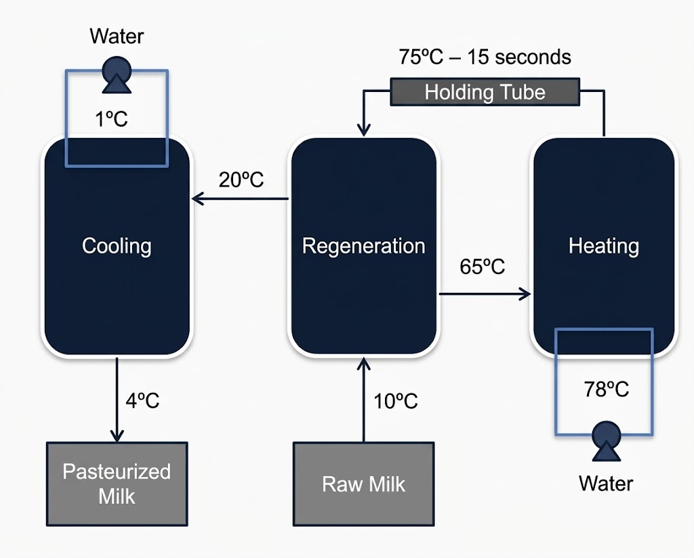
Regeneration Loop Diagram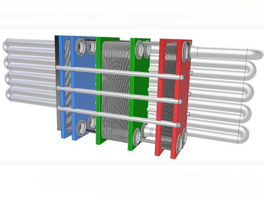
Heat Exchanger Sizing ModelSized a plate heat exchanger for HTST pasteurization of milk at 4,000 L/h, holding the product at 72–75°C for 15–20 seconds per EU Regulation 605/2010, built in AISI 316 stainless steel for corrosion resistance. Adding a regenerative heat-recovery stage lifted the system's overall efficiency to 83.3%, cutting energy demand by 75% versus the non-regenerative baseline.
Designed AquaVolt, a fully electric taxi boat for canal-based urban transport, from concept to business model.
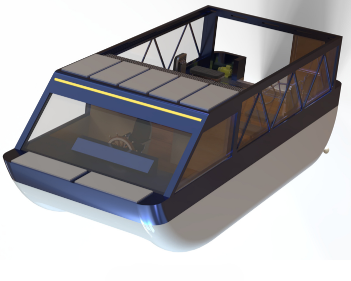
AquaVolt Render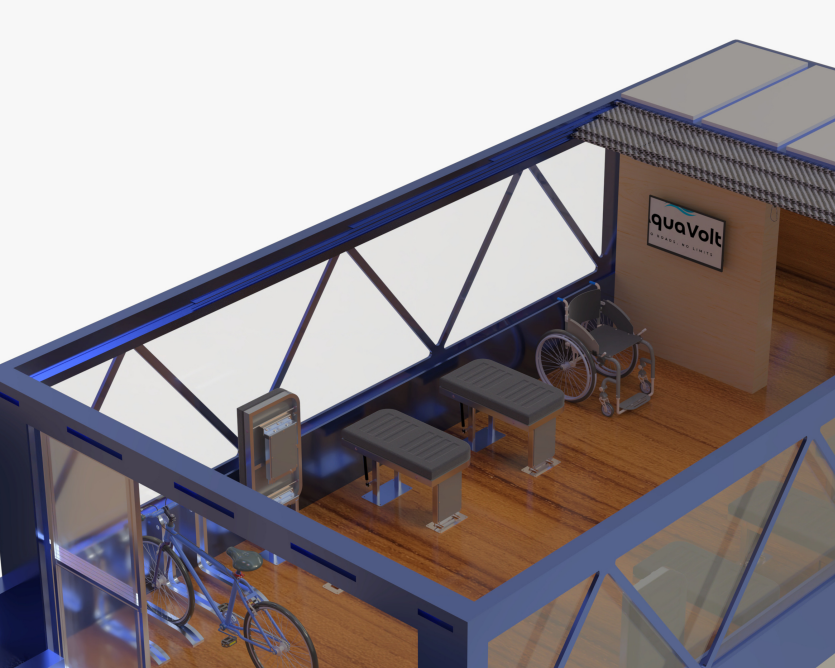
Interior RenderTeam project designing AquaVolt, a fully electric taxi boat for canal-based urban transport, using the Kano model and QFD to translate a "well-being" brief into product requirements. The final design integrates a boarding ramp, retractable seating, a sliding roof, a honeycomb-core floor for weight reduction, and wheelchair accessibility, with space reserved for last-mile transport (bikes and scooters), backed by a full Business Model Canvas.
Built a Kalman-filter and PID-based self-stabilization system for a drone, tuned live over MQTT.
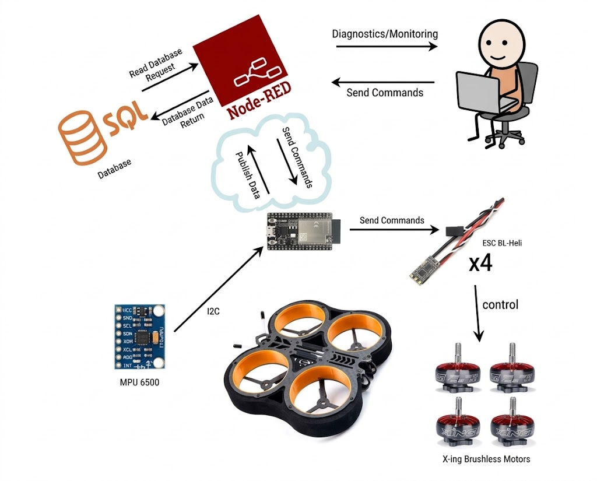
System Schematic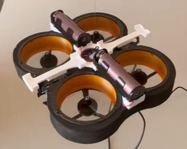
Drone TestBuilt a self-stabilization system for a drone: an MPU6500 accelerometer/gyroscope feeds a Kalman filter estimating roll and pitch in real time, driving a PID controller that adjusts motor speed through the ESCs. Gains were tuned live through a Node-RED dashboard over MQTT to an ESP32. Battery current limits ruled out free flight, so the algorithm was validated instead on a pendulum test rig, successfully damping induced oscillations.
Designed a 2-speed planetary gearbox for a 300 kW electric off-road powertrain.
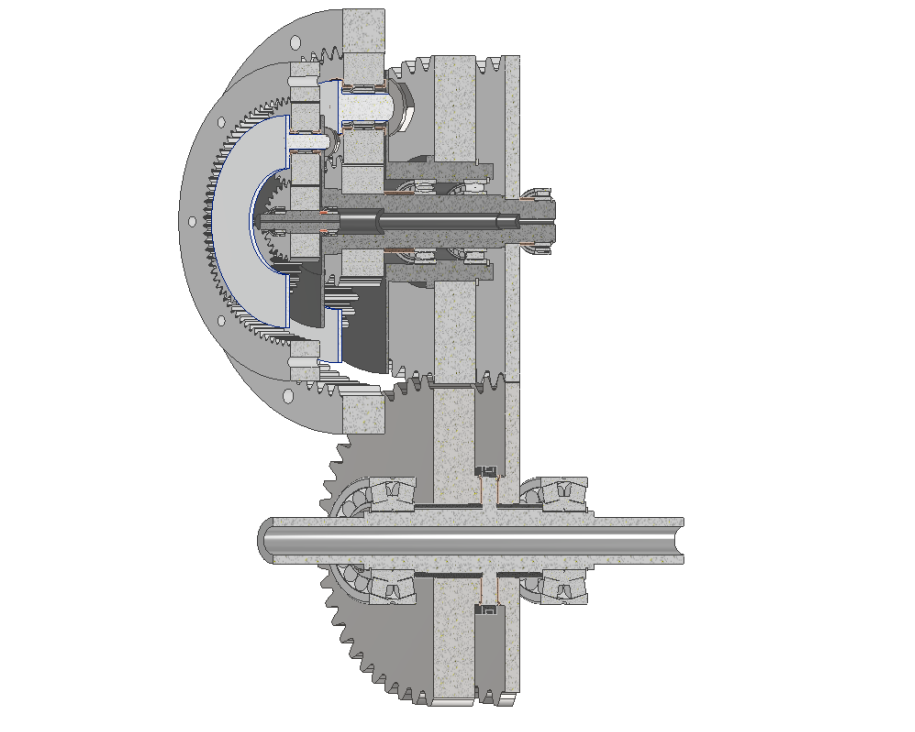
Gearbox section view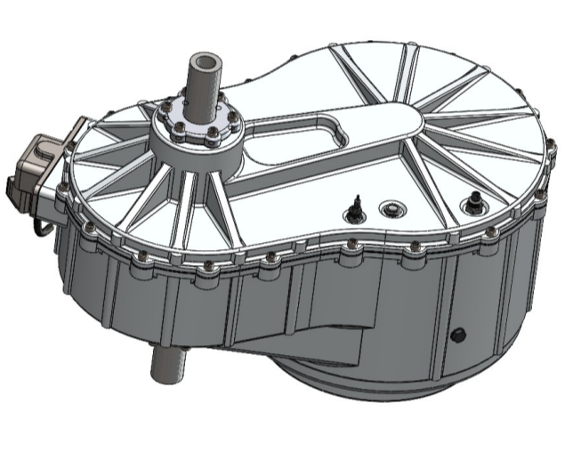
Gearbox with carterDesigned a 2-speed planetary gearbox for a 300 kW electric off-road powertrain, referenced against the Porsche Taycan's motor, with 15:1 and 4.2:1 gear ratios. Sized gears, shafts and bearings in KISSsoft with FEM-validated fatigue safety factors above 1.2, specified Ck35 steel shafts and an electric shift fork for ratio changes, and designed a die-cast aluminium casing with forced lubrication.
Modelled a sand battery for seasonal thermal storage, sized for a real campus heating load.
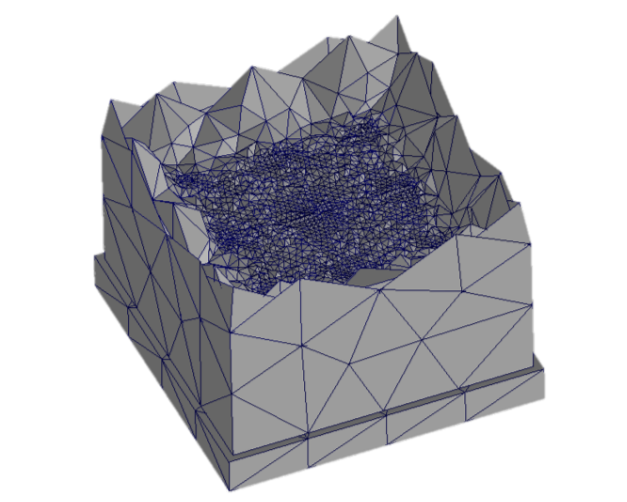
SolidWorks methods model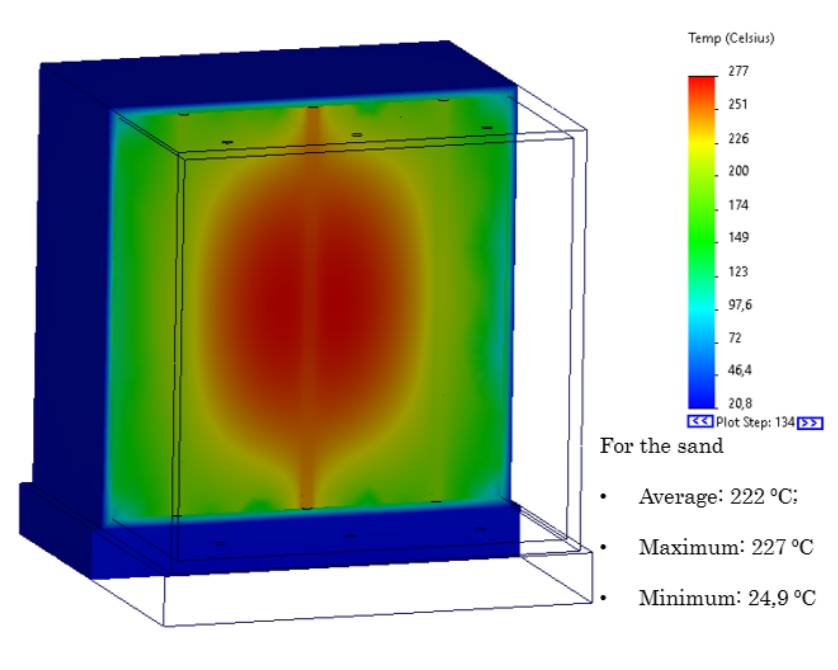
Battery temperature after 150 daysModelled a sand battery for seasonal thermal storage in SolidWorks: a 90-day, 10 kW charge reaching 464°C average (587°C peak, thermostat-limited) at 70% charging efficiency, followed by a 60-day idle period to study self-discharge and insulation thickness. Sized a full-scale system to cover the Department of Mechanical Engineering's winter heating load off a rooftop PV array, with an economic analysis showing it's technically sound but not yet cost-competitive at a ~49-year payback.
Solo cradle-to-gate LCA comparing a conventional milk carton against a redesigned recyclable version.
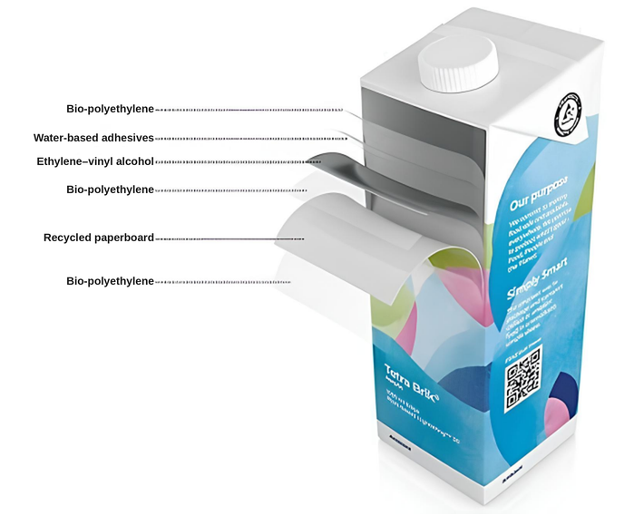
Redesigned Carton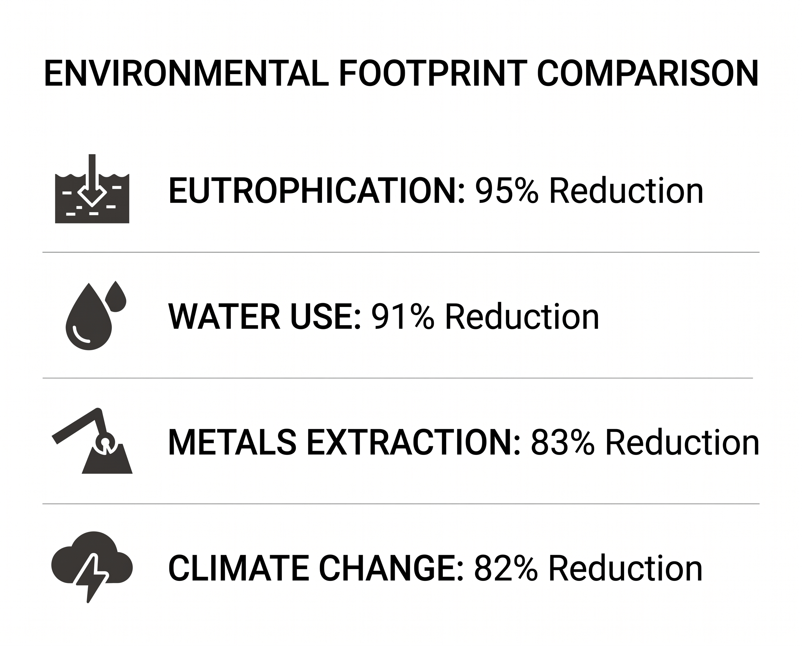
LCA ResultsSolo project comparing the environmental footprint of milk production, processing and packaging. The core contribution is a cradle-to-gate LCA (ISO 14040/44, openLCA, EF 3.1 method) of a redesigned aseptic carton — replacing aluminium foil and virgin plastics with EVOH, recycled PE and recycled paperboard — benchmarked per 100,000 one-litre packs against a conventional carton. The redesign cut climate impact by 5.7×, water use by over 11×, and eutrophication potential by around 19×.
Literature review on fracture behaviour in metal 3D-printed parts, from defects to digital-twin prognosis.
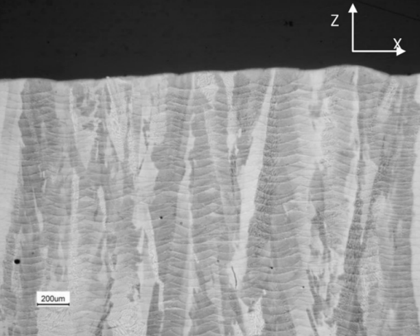
Columnar microstructure in SLM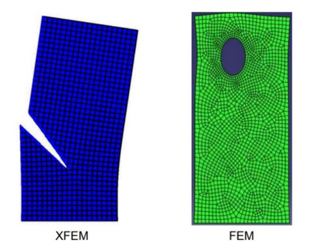
XFEM Crack ModelLiterature review on fracture behaviour in metal additive manufacturing (SLM/EBM), covering how defects like porosity and lack of fusion, plus anisotropic columnar microstructures, degrade fracture toughness — comparing Ti-6Al-4V (KIC 40–60 MPa·m½ vs. ~75 wrought) against AlSi10Mg (KIC 20–30 MPa·m½). Covered experimental (KIC, CTOD/J-integral, fatigue crack growth) and numerical (XFEM) characterisation methods, closing with how in-situ monitoring, machine learning and digital twins are moving the field toward predictive, part-specific fatigue-life certification.
Co-authored a breakwater proposal combining wave energy generation with seawater desalination.
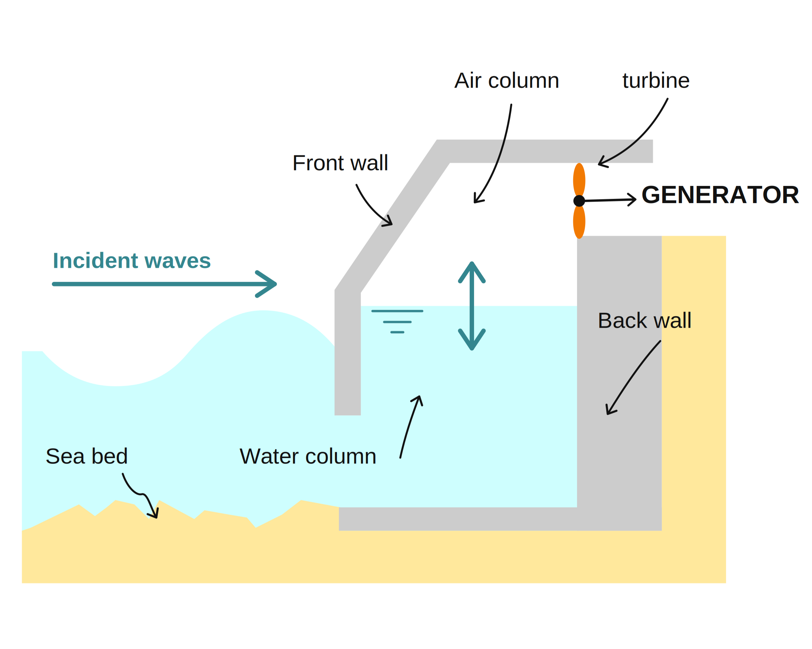
OWC wave energy/span>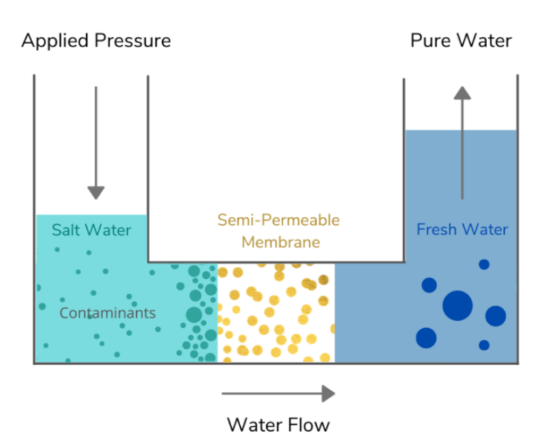
Reverse osmosisCo-authored a project proposal for S.E.A WALL, a multifunctional breakwater integrating wave energy generation with seawater desalination for water- and energy-scarce coastal communities. Led the design and sizing of the wave energy subsystem — an Oscillating Water Column combined with internal floaters that convert wave motion into electricity — feeding a reverse-osmosis desalination system removing over 99% of salt. Proposed for sites such as Zambujeira do Mar, with a projected €3.5M budget over four years.
Always open to discussing new engineering challenges, motorsport projects, or career opportunities.